Material reciclable
Diseño ecológico elaborado con MDF y orientado a la reducción de plásticos de un solo uso.
Envase ecológico para paltas fabricado en MDF de 3 mm mediante corte láser.
Universidad ESAN
Actualmente existe una creciente preocupación por el uso de envases plásticos de un solo uso y su impacto ambiental. En respuesta a esta problemática, las empresas buscan soluciones sostenibles que permitan proteger los alimentos durante su transporte y exhibición sin generar residuos contaminantes.
El presente proyecto consiste en el diseño y fabricación de un envase ecológico fabricado en MDF 3 mm destinado al transporte, almacenamiento y comercialización de paltas. El producto ofrece protección física al fruto, facilita la manipulación por parte del consumidor y mejora la presentación comercial del producto.
El proyecto comprende el diseño CAD, la generación de planos de fabricación, el corte de las piezas mediante la máquina Trotec Speedy 400, el ensamblaje del envase y la validación de su funcionalidad para el transporte y exhibición de paltas.
Al tratarse de un proyecto académico, la fabricación se limita a la elaboración de un prototipo funcional, sin considerar procesos industriales de producción en masa ni estudios de comercialización.
Diseñar y fabricar un envase ecológico para paltas utilizando MDF 3 mm, garantizando resistencia estructural y facilidad de transporte para su comercialización.
Envase ecológico, reutilizable y personalizable para paltas.
Hexa Avocado es un envase ecológico para paltas fabricado en MDF 3 mm. Su diseño combina funcionalidad, sostenibilidad y atractivo visual, permitiendo almacenar y transportar varias paltas de forma segura mientras mejora su presentación en puntos de venta.
Diseño ecológico elaborado con MDF y orientado a la reducción de plásticos de un solo uso.
Evitan golpes entre las paltas y mantienen el producto protegido durante el transporte.
La estructura favorece una manipulación cómoda y un almacenamiento estable.
Permite grabados láser, marca y etiquetas comerciales para puntos de venta.
Hexa Avocado está dirigido a supermercados, tiendas de alimentos, mercados especializados, productores, distribuidores de paltas y consumidores que valoran la sostenibilidad.
La fabricación digital permite desarrollar prototipos de envases con alta precisión dimensional, reduciendo tiempos de producción y desperdicio de material.
El uso de software CAD y corte láser facilitan la creación de prototipos funcionales con acabados de gran calidad estética.
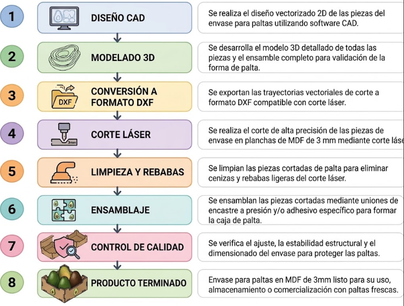
El proceso de fabricación del envase Hexa Avocado se realizó utilizando la máquina de corte láser Trotec Speedy 400, equipo ampliamente utilizado para la manufactura digital de piezas en materiales como MDF, acrílico, cartón y madera delgada.
El corte láser consiste en dirigir un haz de luz altamente concentrado sobre la superficie del material, produciendo su vaporización o fusión localizada. Este proceso permite obtener cortes limpios, precisos y repetitivos, además de realizar grabados superficiales sin necesidad de herramientas mecánicas convencionales.
Para la fabricación del Hexa Avocado se empleó una cortadora láser tipo Trotec Speedy 400 del Fablab ESAN.
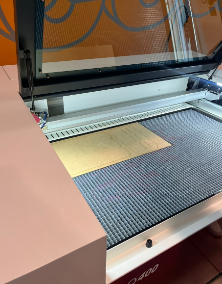
Para la fabricación del prototipo se utilizó MDF de 3 mm de espesor. Este material se caracteriza por su homogeneidad, estabilidad dimensional y facilidad de mecanizado mediante corte láser.
El diseño final contempla una estructura compacta destinada a almacenar y transportar paltas de manera segura.
El diseño del envase fue desarrollado en Autodesk Inventor, donde se modelaron todas las piezas considerando el espesor del MDF de 3 mm y las tolerancias necesarias para el correcto ensamblaje posterior.
Además, el software permitió generar las geometrías de encaje y los archivos vectoriales necesarios para la fabricación mediante corte láser.
A continuación se presentan las piezas diseñadas para la fabricación del envase.
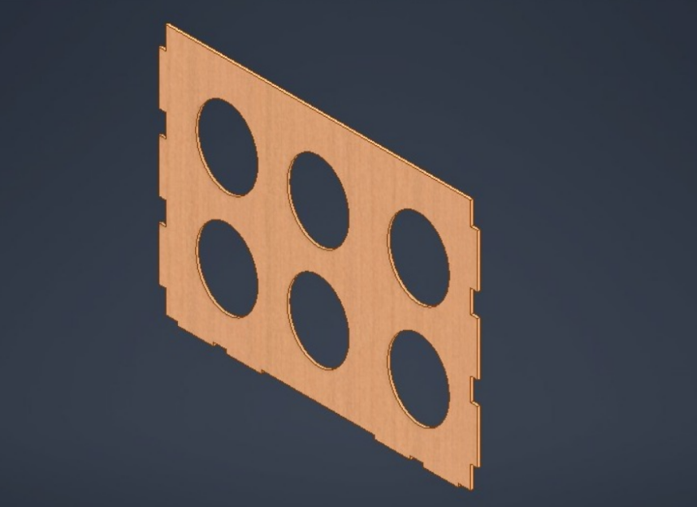
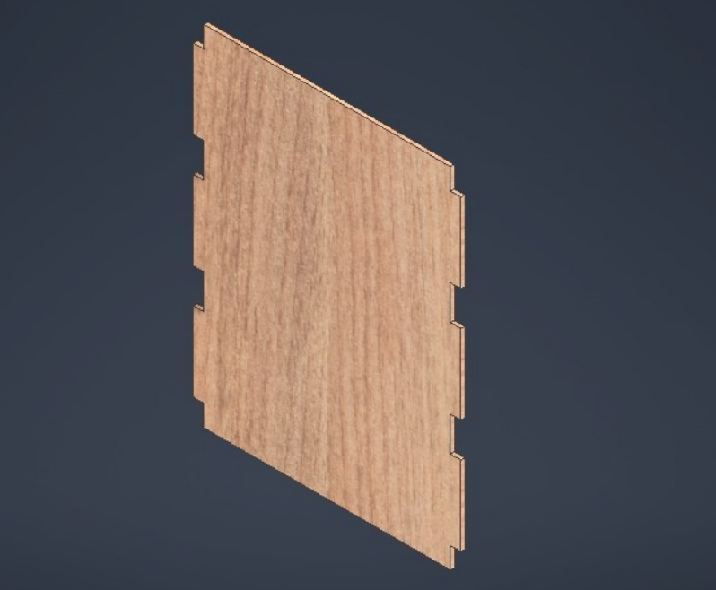
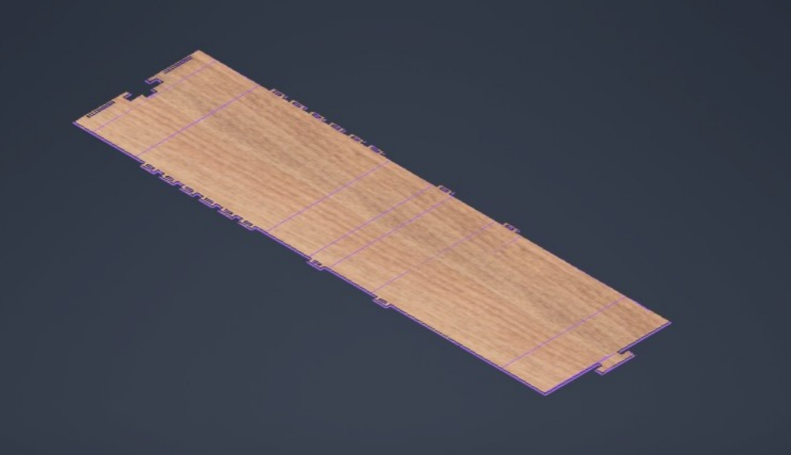
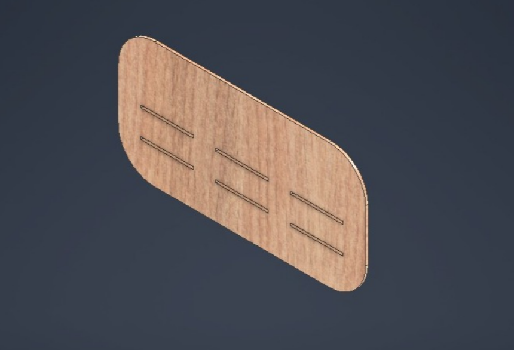
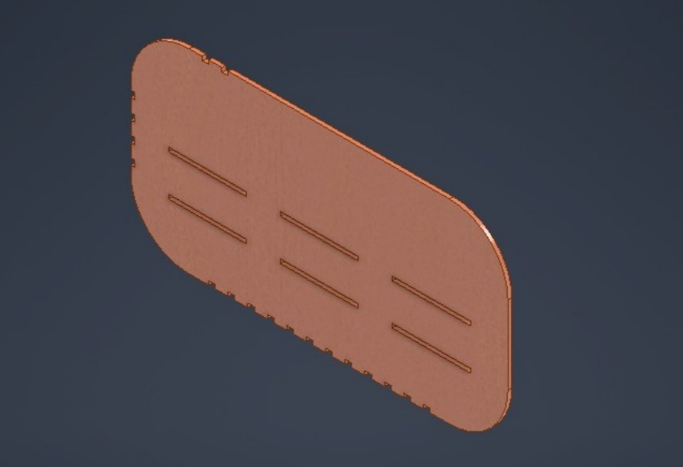
Las piezas del envase fueron diseñadas con ranuras y pestañas que permiten su ensamblaje sin necesidad de tornillos ni elementos de fijación complejos.
Además, la estructura incorpora un sistema de ensamble que facilita el montaje y desmontaje del prototipo, permitiendo además su reutilización.
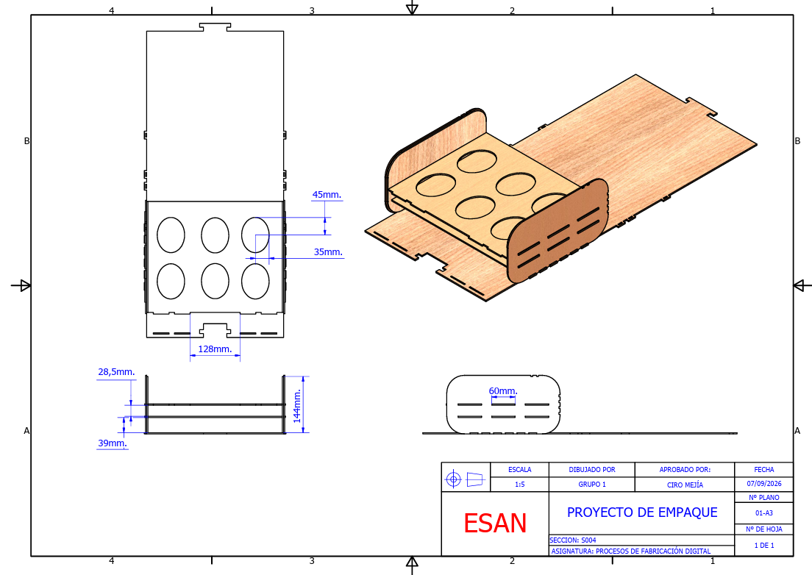
El Hexa Avocado se desarrolló íntegramente en el Fablab de la Universidad ESAN, integrando el flujo digital desde el corte de las piezas hasta el envase terminado.
Una vez cargados los archivos en el software de control de la máquina, las piezas fueron cortadas sobre una plancha de MDF de 3 mm utilizando la Trotec Speedy 400. El proceso permitió obtener cortes limpios y precisos, minimizando la necesidad de retrabajos posteriores.
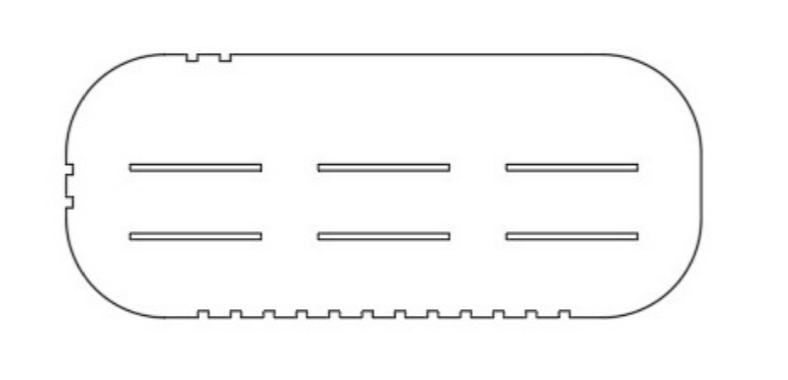
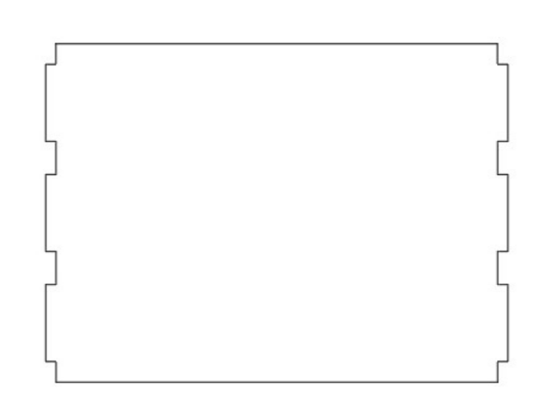
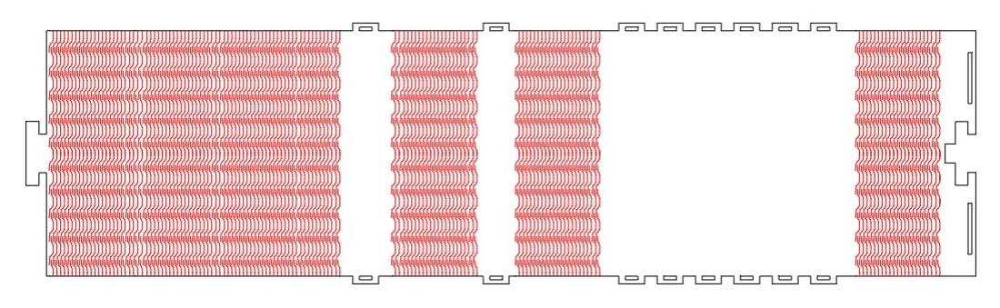
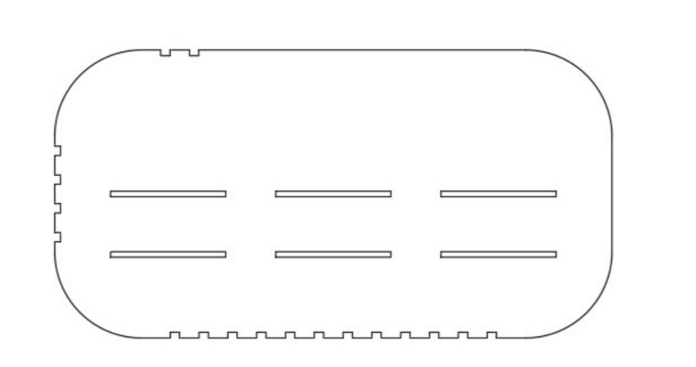
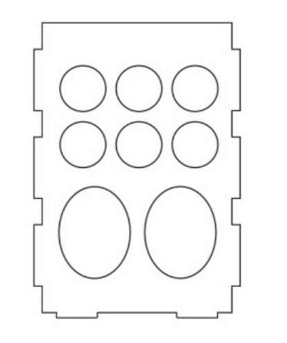
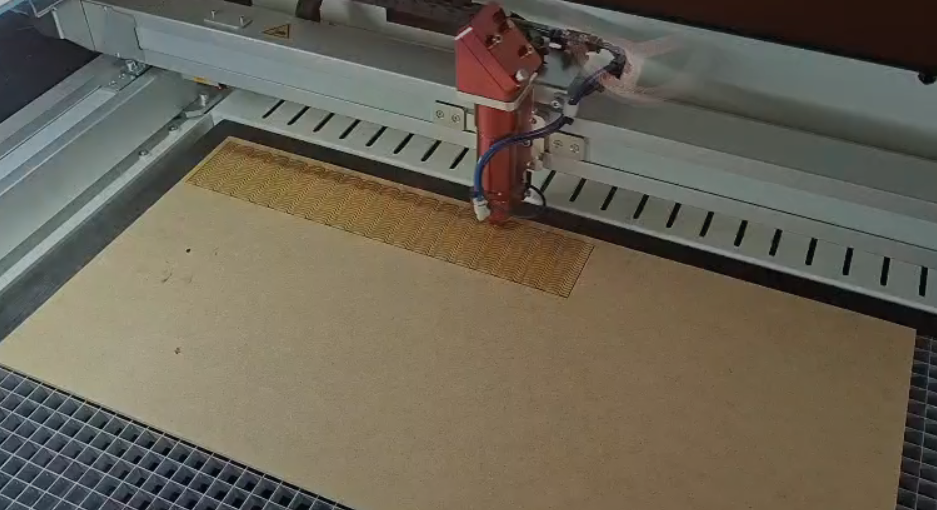
Una vez finalizado el corte láser, las piezas se separaron del tablero y se removieron las rebabas con una lima fina para preparar las superficies de contacto para el ensamble a presión.
Se ensamblaron las piezas laterales, la base y los paneles extremos mediante el sistema de encaje diseñado previamente, colocando los elementos internos destinados a mantener las paltas separadas y protegidas durante el transporte.
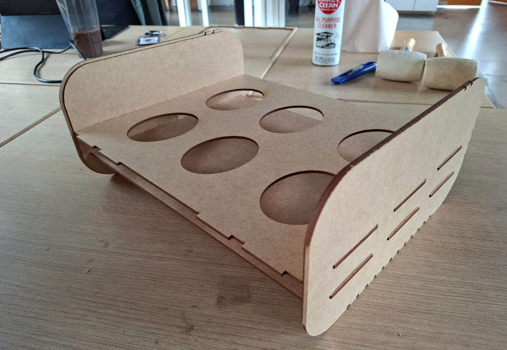
Finalmente se ensambló la tapa frontal, verificando el correcto funcionamiento del mecanismo de apertura y cierre.
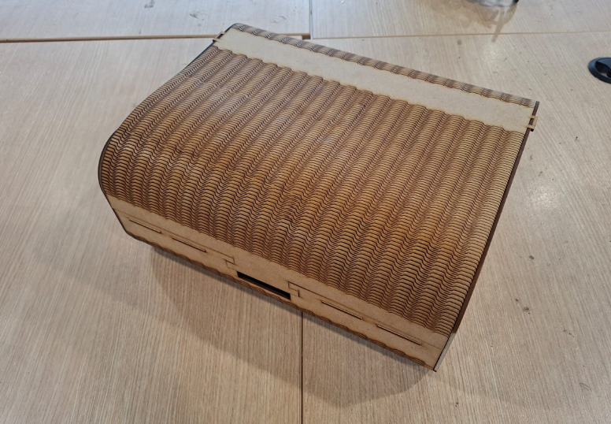
El Hexa Avocado fue concebido como un envase funcional y reutilizable para paltas, fabricado íntegramente en MDF de 3 mm y desarrollado mediante tecnología de corte láser.
El uso de la máquina Trotec Speedy 400 permitió obtener cortes de alta precisión y un excelente acabado superficial en todas las piezas, garantizando un ensamblaje exacto mediante uniones tipo encaje. Asimismo, la incorporación de grabados y elementos visuales contribuye a mejorar la presentación comercial del producto.
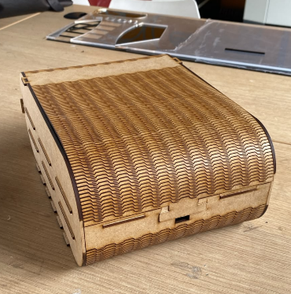
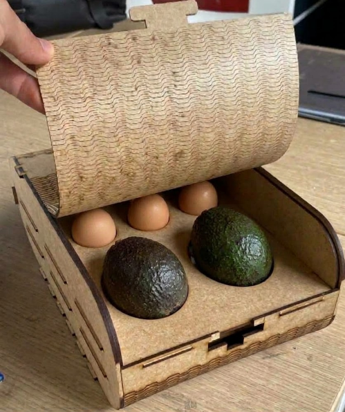
Realizar pruebas con diferentes geometrías internas para mejorar la distribución de las paltas y reducir el movimiento durante el transporte.
Evaluar espesores mayores o refuerzos internos para aplicaciones comerciales que requieran soportar mayores cargas o apilamiento.
Incorporar perforaciones o ranuras estratégicas que favorezcan la conservación durante almacenamiento y exhibición.
Aprovechar la Trotec Speedy 400 para incluir logotipos, información nutricional o elementos gráficos de marca.
Mejorar la distribución de piezas en las planchas de MDF mediante técnicas de nesting para reducir desperdicios.
Realizar pruebas con usuarios, supermercados y tiendas para evaluar aceptación, manipulación y percepción de calidad.
Evidencias de las etapas de corte que dieron forma al prototipo Hexa Avocado.
Registro del corte láser aplicado al recubrimiento del envase para obtener un acabado preciso.
Secuencia del corte de las piezas principales que conforman la estructura del envase.